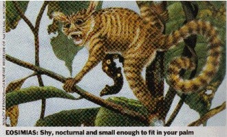
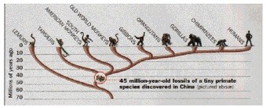
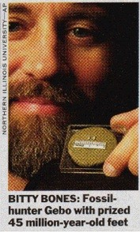

| Evolution in the News - September 2000 |
| by Do-While Jones |
| Linking Man To a Monkey (New fossils point to a tiny tree-dwelling ancestor) 1  |
A Very Tiny Ancestor (Scientists fill in a piece of the evolutionary puzzle) 2
|
|---|
U.S. News and World Report ran a similar picture, with this heading:
| The cutest ancestor? (A runt, but it's family) 3 |
|---|
 |
These mainstream news magazines all reported that this "missing link" 4 connects man and monkey on the family tree shown at the left (which was published in Time magazine). |
|---|
|
Not one of these magazines questioned the conclusion that this "shy, nocturnal" 5 animal was a missing link. At least Time showed the actual evidence.
We have tried to scale the picture so that the bones will appear actual size on your monitor (which is about four times larger than the photo in Time was), but of course that depends upon the size and resolution of your monitor.
Even so, you still might not be able to see the two tiny bone fragments that appear to be less than one quarter of an inch (6 mm) long.
Not one of the fine, investigative reporters who wrote these articles even questioned the claim that one could tell that the creature that once contained these bones was nocturnal. They never asked how anyone knew this creature "had large, saucer-like eyes and flitted about the treetops " 6. They were willing to believe any story that "scientists" told them. Sigh! |
 |
|---|
| Quick links to | |
|---|---|
| Science Against Evolution Home Page |
Back issues of Disclosure (our newsletter) |
| Web Site of the Month |
Topical Index |
Footnotes:
1
Time, March 27, 2000, page 84
(Ev)
2
Newsweek, March 27, 2000, page 66
(Ev)
3
U.S. News and World Report, March 27, 2000
(Ev)
4
ibid.
5
Time, March 27, 2000, page 84
6
ibid.